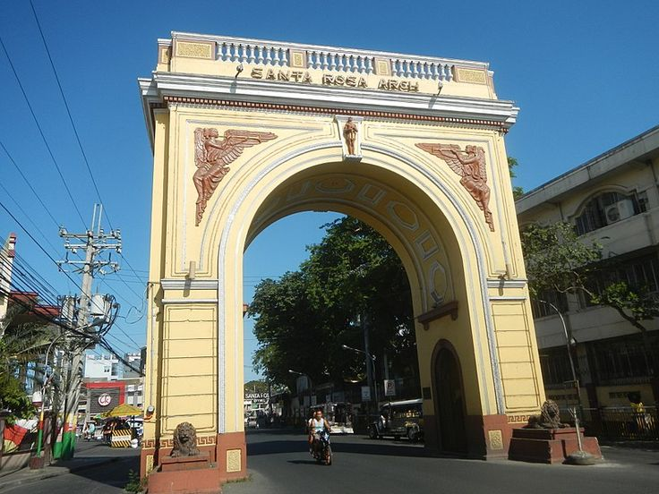

Now on view · Santa Rosa, Laguna
SHExhibit of the South: The Unveiled Corners of Beauty in Sta Rosa, Laguna
Step inside a gallery without walls. From oil paintings in a mall gallery to ceiling murals in a parish church, every work here was studied and written up by students, so the city's art finally gets the label it deserves.
Enter the Gallery →Student-curated collection
SHExhibit of the South: The Unveiled Corners of Beauty in Sta Rosa, Laguna
Oil on canvas, wood inlay, sculpture and painted ceilings: each piece in this collection comes with a place, a maker and a reason to stop and look. Read it as the wall text Santa Rosa never had.
View the Collection →An exhibition in Santa Rosa, Laguna
SHExhibit of the South: The Unveiled Corners of Beauty in Sta Rosa, Laguna
Some of the city's finest work has never had a plaque. We pulled back the curtain on pieces hiding in malls, museums and parish churches, and gave each one the light, the frame and the story a gallery would.
Lift the Curtain →
Gallery
The Hang
Want to see them hung?
Step into the gallery wall: the same paintings in walnut frames, hung salon-style. Hover or tap a frame to take a closer look.
Where the works were found
Artwork Map
About Us
Meet the Team
Listed A–Z by surname. Select a writer's name on any artwork to jump to their card.